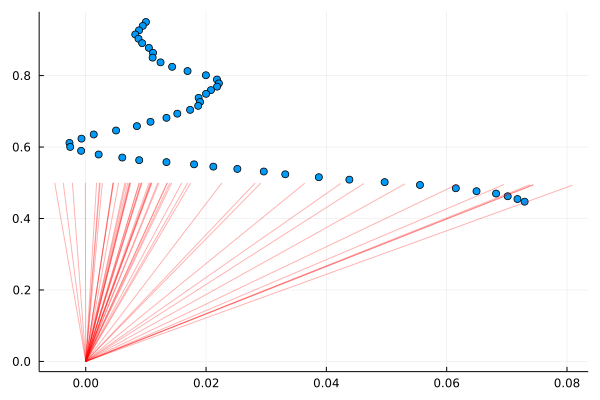
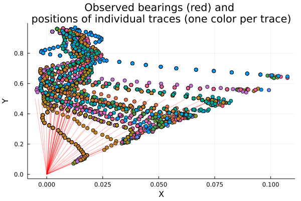
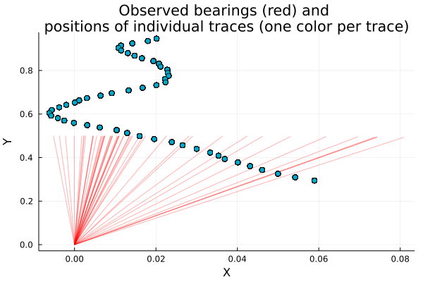
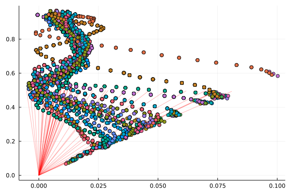
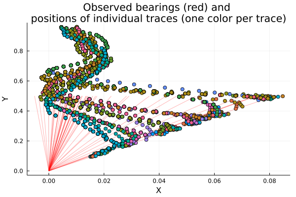
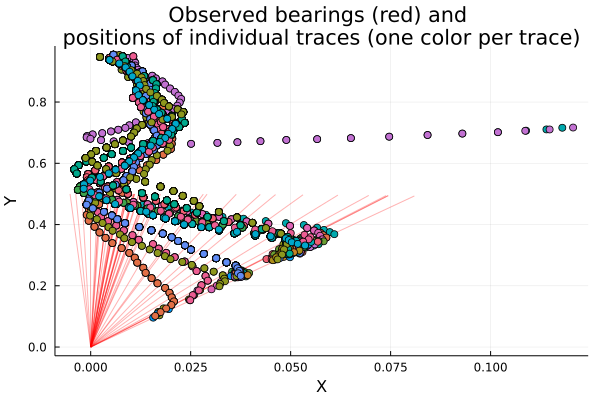
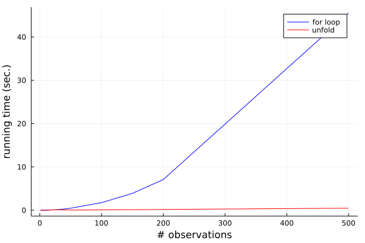

Tutorial: Particle Filtering in Gen (with applications to Object Tracking)
What is this notebook about?
So far, we’ve seen two general classes of inference algorithm, importance sampling and MCMC. Very informally, and focusing only on one aspect of the algorithms, we might describe them as follows:
-
Importance Sampling: guesses solutions “all at once” using a proposal distribution. That proposal may be “smart” (e.g., a neural network), but still guesses an entire solution in one go. We make many guesses, and weight them according to the importance weighting formula.
-
MCMC: beginning with an initial guess, iteratively refine the guess to explore the space of possible solutions. At every iteration, the current state is an entire proposed solution to the problem.
In this notebook, we will explore a third paradigm: Sequential Monte Carlo. SMC methods, such as particle filtering, iteratively solve a sequence of inference problems using techniques based on importance sampling and in some cases MCMC [1,2]. The solution to each problem in the sequence is represented as a collection of samples or particles. The particles for each problem are based on extending or adjusting the particles for the previous problem in the sequence.
The sequence of inference problems that are solved often arise naturally from observations that arrive incrementally, as in particle filtering. Particle filtering algorithms are a subclass of SMC algorithms, often applied to state-space models in which we observe an evolving process over time. We begin by only considering the first time step, inferring the latent variables at that time step given that time step’s observations. We then consider a slightly more difficult inference problem: joint inference of the first two time steps’ latent variables, given both time steps’ observations. And so on, until the observations stop.
But SMC is a more general algorithm than the particle filter might suggest. Sometimes, the sequence of problems does not arise from data arriving incrementally, but is rather constructed instrumentally to facilitate inference, as in annealed importance sampling [3].
However, this notebook focuses on particle filtering for a typical tracking problem. We show how Gen’s support for SMC integrates with its support for MCMC, enabling “rejuvenation” MCMC moves. Specifically, we will address the “bearings only tracking” problem described in [4].
This notebook will also introduce you to the
Unfold combinator,
which can be used to improve performance of SMC.
Unfold is just one example of the levers that Gen provides for
improving performance; once you understand it, you can check
Gen’s documentation to see how similar principles apply to the
Map combinator
and to the static DSL. (These features are also covered in the previous tutorial,
Scaling with Combinators and the Static Modeling Language.)
[1] Doucet, Arnaud, Nando De Freitas, and Neil Gordon. “An introduction to sequential Monte Carlo methods.” Sequential Monte Carlo methods in practice. Springer, New York, NY, 2001. 3-14.
[2] Del Moral, Pierre, Arnaud Doucet, and Ajay Jasra. “Sequential Monte Carlo samplers.” Journal of the Royal Statistical Society: Series B (Statistical Methodology) 68.3 (2006): 411-436.
[3] Neal, Radford M. “Annealed importance sampling.” Statistics and computing 11.2 (2001): 125-139.
[4] Gilks, Walter R., and Carlo Berzuini. “Following a moving target—Monte Carlo inference for dynamic Bayesian models.” Journal of the Royal Statistical Society: Series B (Statistical Methodology) 63.1 (2001): 127-146. PDF
Outline
Section 1: Implementing the generative model
Section 2: Implementing a basic particle filter
Section 3: Adding rejuvenation moves
Section 4: Using the unfold combinator to improve performance
using Gen, Plots
1. Implementing the generative model
We will implement a generative model for the movement of a point in the x-y plane and bearing measurements of the location of this point relative to the origin over time. We imagine, for example, that we are located at the origin, and can measure the location of a far-away ship (the object we are tracking) only by measuring its bearing relative to us, i.e., the angle formed with the x axis by the ray connecting us to the ship. We would like to infer its (x, y) position over time.
We assume that we know the approximate initial position and velocity of the ship. We assume the point’s x- and y- velocity are subject to random perturbations drawn from some normal distribution with a known variance. Each bearing measurement consists of the angle of the point being tracked relative to the positive x-axis.
We write the generative model as a generative function below. The function
first samples the initial state of the ship from a prior distribution, and
then generates T successive states in a for loop. The argument to the
model (T) is the number of time steps not including the initial state.
bearing(x, y) = atan(y, x)
@gen function model(T::Int)
measurement_noise = 0.005
velocity_var = 1e-6
xs = Vector{Float64}(undef, T+1)
ys = Vector{Float64}(undef, T+1)
# prior on initial x-coordinate
x = {:x0} ~ normal(0.01, 0.01)
# prior on initial y-coordinate
y = {:y0} ~ normal(0.95, 0.01)
# prior on x-component of initial velocity
vx = {:vx0} ~ normal(0.002, 0.01)
# prior on y-component of initial velocity
vy = {:vy0} ~ normal(-0.013, 0.01)
# initial bearing measurement
z0 ~ normal(bearing(x, y), measurement_noise)
# record position
xs[1] = x
ys[1] = y
# generate successive states and measurements
for t=1:T
# update the state of the point
vx = {(:vx, t)} ~ normal(vx, sqrt(velocity_var))
vy = {(:vy, t)} ~ normal(vy, sqrt(velocity_var))
x += vx
y += vy
# bearing measurement
{(:z, t)} ~ normal(bearing(x, y), measurement_noise)
# record position
xs[t+1] = x
ys[t+1] = y
end
# return the sequence of positions
return (xs, ys)
end;
Note that the model function itself uses mutation to evolve the variables x, y, vx, and vy
over time. The {addr} ~ distribution() syntax keeps the names of traced random variables (for which
each address may only be used once) separate from the names of program variables, like x, which may
be reassigned multiple times during the function’s execution.
We generate a data set of positions, and observed bearings, by sampling from this model, with T=50:
import Random
Random.seed!(3)
# generate trace with specific initial conditions
T = 50
constraints = Gen.choicemap((:x0, 0.01), (:y0, 0.95), (:vx0, 0.002), (:vy0, -0.013))
(trace, _) = Gen.generate(model, (T,), constraints)
# extract the observed data (zs) from the trace
choices = Gen.get_choices(trace)
zs = Vector{Float64}(undef, T+1)
zs[1] = choices[:z0]
for t=1:T
zs[t+1] = choices[(:z, t)]
end
We next write a visualization for traces of this model below. It shows the positions and dots and the observed bearings as lines from the origin:
function render(trace; show_data=true, max_T=get_args(trace)[1], overlay=false)
(T,) = Gen.get_args(trace)
(xs, ys) = Gen.get_retval(trace)
zs = Vector{Float64}(undef, T+1)
zs[1] = trace[:z0]
for t=1:T
zs[t+1] = trace[(:z, t)]
end
f = overlay ? scatter! : scatter
fig = f(xs[1:max_T+1], ys[1:max_T+1], s=:auto, label=nothing)
if show_data
for z in zs[1:max_T+1]
dx = cos(z) * 0.5
dy = sin(z) * 0.5
plot!([0., dx], [0., dy], color="red", alpha=0.3, label=nothing)
end
end
return fig
end;
We visualize the synthetic trace below:
plot(label=nothing)
render(trace)

Note that these are the observed bearings, but we are not plotting the “ground truth” locations of the ship. There are many trajectories consistent with these bearings; for each of the red rays in the above plot, the ship could be anywhere along the ray (or even slightly off it, given that our measurements are noisy). However, our assumptions about the dynamics of the situation — that is, the conditional distributions $P(x_{t+1}, y_{t+1} \mid x_t, y_t)$ — will ensure that physics-defying trajectories (e.g., where the ship moves from a very high Y coordinate to a very low one in a short time) are ruled out.
2. Implementing a basic particle filter
In Gen, a particle is represented as a trace and the particle filter
state contains a weighted collection of traces. Below we define an inference
program that runs a particle filter on an observed data set of bearings
(zs). We use num_particles particles internally, and then we return a
sample of num_samples traces from the weighted collection that the particle
filter produces.
Gen provides methods for initializing and updating the state of a particle filter, documented in Particle Filtering.
-
Gen.initialize_particle_filter -
Gen.particle_filter_step!
Both of these methods can used either with the default proposal or a custom proposal. In this problem, we will use the default proposal. There is also a method that resamples particles based on their weights, which serves to redistribute the particles to more promising parts of the latent space.
Gen.maybe_resample!
Gen also provides a method for sampling a collection of unweighted traces from the current weighted collection in the particle filter state:
Gen.sample_unweighted_traces
function particle_filter(num_particles::Int, zs::Vector{Float64}, num_samples::Int)
# construct initial observations
init_obs = Gen.choicemap((:z0, zs[1]))
state = Gen.initialize_particle_filter(model, (0,), init_obs, num_particles)
# steps
for t=1:length(zs)-1
Gen.maybe_resample!(state, ess_threshold=num_particles/2)
obs = Gen.choicemap(((:z, t), zs[t+1]))
Gen.particle_filter_step!(state, (t,), (UnknownChange(),), obs)
end
# return a sample of unweighted traces from the weighted collection
return Gen.sample_unweighted_traces(state, num_samples)
end;
The initial state is obtained by providing the following to
initialize_particle_filter:
-
The generative function for the generative model (
model) -
The initial arguments to the generative function.
-
The initial observations, expressed as a map from choice address to values (
init_obs). -
The number of particles.
At each step, we resample from the collection of traces (maybe_resample!)
and then we introduce one additional bearing measurement by calling
particle_filter_step! on the state. We pass the following arguments to
particle_filter_step!:
-
The state (it will be mutated)
-
The new arguments to the generative function for this step. In our case, this is the number of measurements beyond the first measurement.
-
The argdiff value, which provides detailed information about the change to the arguments between the previous step and this step. We will revisit this value later. For now, we indicate that we do not know how the
T::Intargument will change with each step. -
The new observations associated with the new step. In our case, this just contains the latest measurement.
We run this particle filter with 5000 particles, and return a sample of 100 particles. This will take 30-60 seconds. We will see one way of speeding up the particle filter in a later section.
@time pf_traces = particle_filter(5000, zs, 200);
29.409079 seconds (425.59 M allocations: 13.876 GiB, 23.89% gc time)
To render these traces, we first define a function that overlays many renderings:
function overlay(renderer, traces; same_data=true, args...)
fig = plot(title="Observed bearings (red) and \npositions of individual traces (one color per trace)",
xlabel="X", ylabel="Y")
renderer(traces[1], show_data=true, overlay=true, args...)
for i=2:length(traces)
renderer(traces[i], show_data=!same_data, overlay=true, args...)
end
fig
end;
We then render the traces from the particle filter:
overlay(render, pf_traces)

We see a broad posterior; many trajectories explain this particular set of observed bearings. Notice that during the period of denser bearing measurements, the trajectories tend to turn so that the heading is more parallel to the bearing vector. An alternative explanation is that the point maintained a constant heading, but just slowed down significantly. It is interesting to see that the inferences favor the “turning explanation” over the “slowing down explanation”.
Exercise
Run the particle filter with fewer particles and visualize the results.
Exercise
Run the particle filter without the maybe_resample! step, and visualize the results.
What do you observe? Why do you think this is? Answer in the free response section below.
The code for particle_filter (from above) is copied in the body of the function below. Modify it so that it does NOT perform resampling after each time step.
function particle_filter_no_resampling(num_particles::Int, zs::Vector{Float64}, num_samples::Int)
# construct initial observations
init_obs = Gen.choicemap((:z0, zs[1]))
state = Gen.initialize_particle_filter(model, (0,), init_obs, num_particles)
# steps
for t=1:length(zs)-1
Gen.maybe_resample!(state, ess_threshold=num_particles/2)
obs = Gen.choicemap(((:z, t), zs[t+1]))
Gen.particle_filter_step!(state, (t,), (UnknownChange(),), obs)
end
# return a sample of unweighted traces from the weighted collection
return Gen.sample_unweighted_traces(state, num_samples)
end;
@time pf_traces_no_resampling = particle_filter_no_resampling(5000, zs, 200);
overlay(render, pf_traces_no_resampling)
30.366808 seconds (425.59 M allocations: 13.862 GiB, 26.13% gc time)

Describe how the inference differs with and without resampling (based on the two plots above). Why do you think that is? Is it desirable?
3. Adding rejuvenation moves
The particle filter we developed above works as follows:
- At the start, guess many possible initial positions and velocities for the ship.
- Score these proposals based on the initial observation,
z0. - Use
maybe_resample!to clone the guesses that explainz0well, and cull the guesses that explain it poorly. - For each data point:
- For each guess (particle) from the previous time step, guess many possible
extensions of the particle to include values of
vxandvyfor the next time step. - Score these extended proposed particles based on the latest bearing.
- Use
maybe_resample!to clone the guesses that explain thez’s so far, and cull the guesses that don’t.
- For each guess (particle) from the previous time step, guess many possible
extensions of the particle to include values of
A problem with this procedure is that after the initial guesses for a quantity
have been made, they are never revised. This is despite the fact that learning
about later bearings may tell us a lot about earlier positions. This can be especially
problematic in the presence of resampling: notice how, in the above results,
the starting locations of all the particles are likely nearly identical, even though
the paths become more diverse as time goes on. This is because “good” particles at the
first step were likely cloned and propagated through the particle filter, never
changing the x0 and y0 values.
Therefore, it is sometimes useful to add MCMC moves to particles in a particle filter between steps. These MCMC moves are often called “rejuvenation moves” [4]. Each rejuvenation move targets the current posterior distribution at the given step. For example, when applying the rejuvenation move after incorporating 3 observations, our rejuvenation moves have as their stationary distribution the conditional distribution on the latent variables, given the first three observations.
Rejuvenation moves can target any portion of the latent space. It is common for rejuvenation moves to target “global” variables that affect every time step (e.g., the initial position of the ship), or a sliding window of recent variables, e.g., the velocities from the previous five time steps.
In this section, we write two new versions of the particle filter, each of which uses
Metropolis-Hastings rejuvenation moves to adjust each particle at every time step.
The first version uses so-called “resimulation MH” to adjust the initial choices (x0, y0,
and the initial velocities). This means that the proposal distribution for
MH is equal to the prior of the generative model. The proposed next state
under this rejuvenation move is independent of the current state. By
contrast, the second version we write will use Gaussian drift proposals, and
therefore we refer to it as “random walk MH.” The Gaussian drift rejuvenation moves
will target a sliding window of recent velocities, perturbing them to see if — in
light of new data — we can find better values for them.
First, the resimulation MH rejuvenation move (this function is the same as the previous, but with the addition of a rejuvenation move targeting the initial choices of each particle):
function particle_filter_rejuv_resim(num_particles::Int, zs::Vector{Float64}, num_samples::Int)
init_obs = Gen.choicemap((:z0, zs[1]))
state = Gen.initialize_particle_filter(model, (0,), init_obs, num_particles)
for t=1:length(zs)-1
# apply a rejuvenation move to each particle
for i=1:num_particles
initial_choices = select(:x0, :y0, :vx0, :vy0)
state.traces[i], _ = mh(state.traces[i], initial_choices)
end
Gen.maybe_resample!(state, ess_threshold=num_particles/2)
obs = Gen.choicemap(((:z, t), zs[t+1]))
Gen.particle_filter_step!(state, (t,), (UnknownChange(),), obs)
end
# return a sample of unweighted traces from the weighted collection
return Gen.sample_unweighted_traces(state, num_samples)
end;
@time pf_rejuv_traces = particle_filter_rejuv_resim(5000, zs, 200);
overlay(pf_rejuv_traces)
50.894260 seconds (743.99 M allocations: 24.945 GiB, 20.05% gc time)

You may notice slightly more variety in the initial state, compared to our first round of particle filtering.
Exercise
Write a random walk MH rejuvenation move that perturbs the velocity vectors
for a block of time steps between a and b inclusive. In this move, draw
the perturbation from a normal distribution with standard deviation 1e-3.
When sampling a new vx and vy for time step t (where a <= t <= b),
make sure you use the right address — you want to use the same address
in your proposal as was used in the model.
We have provided starter code.
@gen function perturbation_proposal(prev_trace, a::Int, b::Int)
(T,) = get_args(prev_trace)
speed = Array{Float64}(undef, 2, 1)
for t=a:b
speed[1] = 0. # <Remove zero and put your code to perturb vx here>
speed[2] = 0. # <Remove zero and put your code to perturb vy here>
end
return speed # Return an array of the most recent [vx, vy] for testing
end
function perturbation_move(trace, a::Int, b::Int)
Gen.metropolis_hastings(trace, perturbation_proposal, (a, b))
end;
We add this into our particle filtering inference program below. We apply the rejuvenation move to adjust the velocities for the previous 5 time steps.
function particle_filter_rejuv(num_particles::Int, zs::Vector{Float64}, num_samples::Int)
init_obs = Gen.choicemap((:z0, zs[1]))
state = Gen.initialize_particle_filter(model, (0,), init_obs, num_particles)
for t=1:length(zs)-1
# apply a rejuvenation move to each particle
for i=1:num_particles
state.traces[i], _ = perturbation_move(state.traces[i], max(1, t-5), t-1)
end
Gen.maybe_resample!(state, ess_threshold=num_particles/2)
obs = Gen.choicemap(((:z, t), zs[t+1]))
Gen.particle_filter_step!(state, (t,), (UnknownChange(),), obs)
end
# return a sample of unweighted traces from the weighted collection
return Gen.sample_unweighted_traces(state, num_samples)
end;
We run the particle filter with rejuvenation below. This will take a minute or two. We will see one way of speeding up the particle filter in a later section.
@time pf_rejuv_traces = particle_filter_rejuv(5000, zs, 200);
61.996773 seconds (955.22 M allocations: 31.208 GiB, 18.78% gc time, 0.22% compilation time)
We render the traces:
overlay(render, pf_rejuv_traces)

4. Using the Unfold combinator to improve performance
For the particle filtering algorithms above, within an update step it is only necessary to revisit the most recent state (or the most recent 5 states if the rejuvenation moves are used) because the initial states are never updated, and the contribution of these states to the weight computation cancel.
However, each update step of the particle filter inference programs above scales linearly in the size of the trace because it visits every state when computing the weight update. This is because the built-in modeling DSL by default always performs an end-to-end execution of the generative function body whenever performing a trace update. This allows the built-in modeling DSL to be very flexible and to have a simple implementation, at the cost of performance. There are several ways of improving performance after one has a prototype written in the built-in modeling DSL. One of these is Generative Function Combinators, which make the flow of information through the generative process more explicit to Gen, and enable asymptotically more efficient inference programs.
To exploit the opportunity for incremental computation, and improve the
scaling behavior of our particle filter inference programs, we will write a
new model using a generative function combinator to replaces the following
Julia for loop in our model.
# generate successive states and measurements
for t=1:T
# update the state of the point
vx = {(:vx, t)} ~ normal(vx, sqrt(velocity_var))
vy = {(:vy, t)} ~ normal(vy, sqrt(velocity_var))
x += vx
y += vy
# bearing measurement
{(:z, t)} ~ normal(bearing(x, y), measurement_noise)
# record position
xs[t+1] = x
ys[t+1] = y
end
This for loop has a very specific pattern of information flow—there is a
sequence of states (represented by x, y, vx, and vy), and each state is
generated from the previous state. This is exactly the pattern that the
Unfold
generative function combinator is designed to handle.
Below, we re-express the Julia for loop over the state sequence using the
Unfold combinator. Specifically, we define a generative function (kernel)
that takes the prevous state as its second argument, and returns the new
state. The Unfold combinator takes the kernel and returns a new generative
function (chain) that applies kernel repeatedly. Read the Unfold combinator
documentation for details on the behavior of the resulting generative
function (chain).
struct State
x::Float64
y::Float64
vx::Float64
vy::Float64
end
@gen (static) function kernel(t::Int, prev_state::State,
velocity_var::Float64, measurement_noise::Float64)
vx ~ normal(prev_state.vx, sqrt(velocity_var))
vy ~ normal(prev_state.vy, sqrt(velocity_var))
x = prev_state.x + vx
y = prev_state.y + vy
z ~ normal(bearing(x, y), measurement_noise)
next_state = State(x, y, vx, vy)
return next_state
end
chain = Gen.Unfold(kernel)
Gen.@load_generated_functions # To allow use of the generative function written in the static modeling language above.
We can understand the behavior of chain by getting a trace of it and printing the random choices:
trace = Gen.simulate(chain, (4, State(0., 0., 0., 0.), 0.01, 0.01))
Gen.get_choices(trace)
│
├── 1
│ │
│ ├── :vx : -0.16005546360702977
│ │
│ ├── :vy : 0.04157626068882018
│ │
│ └── :z : 2.9058630801049135
│
├── 2
│ │
│ ├── :vx : -0.3116918127503052
│ │
│ ├── :vy : -0.0008015232192748398
│ │
│ └── :z : 3.0582202784905146
│
├── 3
│ │
│ ├── :vx : -0.3208970767945174
│ │
│ ├── :vy : 0.10971756582531614
│ │
│ └── :z : 2.957441737581248
│
└── 4
│
├── :vx : -0.409217244554438
│
├── :vy : 0.09605326146118406
│
└── :z : 2.946040343224056
We now write a new version of the generative model that invokes chain instead of using the Julia for loop:
@gen (static) function unfold_model(T::Int)
# parameters
measurement_noise = 0.005
velocity_var = 1e-6
# initial conditions
x0 ~ normal(0.01, 0.01)
y0 ~ normal(0.95, 0.01)
vx0 ~ normal(0.002, 0.01)
vy0 ~ normal(-0.013, 0.01)
# initial measurement
z0 ~ normal(bearing(x0, y0), measurement_noise)
# record initial state
init_state = State(x0, y0, vx0, vy0)
# run `chain` function under address namespace `:chain`, producing a vector of states
chain ~ chain(T, init_state, velocity_var, measurement_noise)
result = (init_state, chain)
return result
end;
Gen.@load_generated_functions
Let’s generate a trace of this new model program to understand its structure:
(trace, _) = Gen.generate(unfold_model, (4,))
Gen.get_choices(trace)
│
├── :x0 : 0.02829016704702266
│
├── :y0 : 0.944130980723105
│
├── :vx0 : -0.01211548995615543
│
├── :vy0 : -0.0011768324274766158
│
├── :z0 : 1.5438271209342964
│
└── :chain
│
├── 1
│ │
│ ├── :vx : -0.010590390234134883
│ │
│ ├── :vy : -0.002736563927159297
│ │
│ └── :z : 1.5451694461454186
│
├── 2
│ │
│ ├── :vx : -0.011781350126298142
│ │
│ ├── :vy : -0.0016362592028639213
│ │
│ └── :z : 1.5635865571445768
│
├── 3
│ │
│ ├── :vx : -0.010813501450576902
│ │
│ ├── :vy : -0.0016624678745696933
│ │
│ └── :z : 1.570668605841687
│
└── 4
│
├── :vx : -0.010614024589361754
│
├── :vy : -0.0014007622704174942
│
└── :z : 1.5940109171526655
We can now run a particle filter on the Unfold model and see a speedup:
function unfold_particle_filter(num_particles::Int, zs::Vector{Float64}, num_samples::Int)
init_obs = Gen.choicemap((:z0, zs[1]))
state = Gen.initialize_particle_filter(unfold_model, (0,), init_obs, num_particles)
for t=1:length(zs)-1
maybe_resample!(state, ess_threshold=num_particles/2)
obs = Gen.choicemap((:chain => t => :z, zs[t+1]))
Gen.particle_filter_step!(state, (t,), (UnknownChange(),), obs)
end
# return a sample of traces from the weighted collection:
return Gen.sample_unweighted_traces(state, num_samples)
end;
@time unfold_pf_traces = unfold_particle_filter(5000, zs, 200);
2.501968 seconds (33.93 M allocations: 3.424 GiB, 18.76% gc time)
function unfold_render(trace; show_data=true, max_T=get_args(trace)[1], overlay=false)
(T,) = Gen.get_args(trace)
choices = Gen.get_choices(trace)
(init_state, states) = Gen.get_retval(trace)
xs = Vector{Float64}(undef, T+1)
ys = Vector{Float64}(undef, T+1)
zs = Vector{Float64}(undef, T+1)
xs[1] = init_state.x
ys[1] = init_state.y
zs[1] = choices[:z0]
for t=1:T
xs[t+1] = states[t].x
ys[t+1] = states[t].y
zs[t+1] = choices[:chain => t => :z]
end
f = overlay ? scatter! : scatter
fig = f(xs[1:max_T+1], ys[1:max_T+1], s=:auto, label=nothing)
if show_data
for z in zs[1:max_T+1]
dx = cos(z) * 0.5
dy = sin(z) * 0.5
plot!([0., dx], [0., dy], color="red", alpha=0.3, label=nothing)
end
end
end;
Let’s check that the results are reasonable:
overlay(unfold_render, unfold_pf_traces, same_data=true)

We now empirically investigate the scaling behavior of (1) the inference program that uses the Julia for loop, and (2) the equivalent inference program that uses Unfold. We will use a fake long vector of z data, and we will investigate how the running time depends on the number of observations.
fake_zs = rand(1000);
function timing_experiment(num_observations_list::Vector{Int}, num_particles::Int, num_samples::Int)
times = Vector{Float64}()
times_unfold = Vector{Float64}()
for num_observations in num_observations_list
println("evaluating inference programs for num_observations: $num_observations")
tstart = time_ns()
traces = particle_filter(num_particles, fake_zs[1:num_observations], num_samples)
push!(times, (time_ns() - tstart) / 1e9)
tstart = time_ns()
traces = unfold_particle_filter(num_particles, fake_zs[1:num_observations], num_samples)
push!(times_unfold, (time_ns() - tstart) / 1e9)
end
(times, times_unfold)
end;
num_observations_list = [1, 3, 10, 30, 50, 100, 150, 200, 500]
(times, times_unfold) = timing_experiment(num_observations_list, 100, 20);
evaluating inference programs for num_observations: 1
evaluating inference programs for num_observations: 3
evaluating inference programs for num_observations: 10
evaluating inference programs for num_observations: 30
evaluating inference programs for num_observations: 50
evaluating inference programs for num_observations: 100
evaluating inference programs for num_observations: 150
evaluating inference programs for num_observations: 200
evaluating inference programs for num_observations: 500
Notice that the running time of the inference program without unfold appears to be quadratic in the number of observations, whereas the inference program that uses unfold appears to scale linearly:
plot(num_observations_list, times, color="blue", xlabel="# observations", ylabel="running time (sec.)", label="for loop")
plot!(num_observations_list, times_unfold, color="red", label="unfold")
